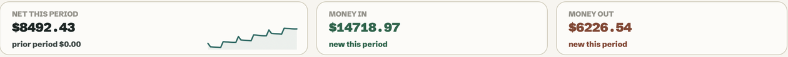
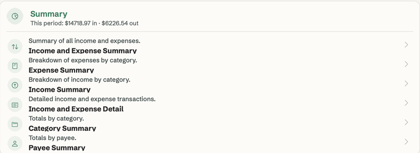
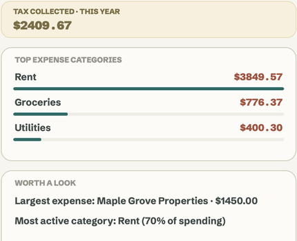
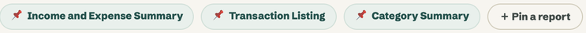

LedgerCaddy is straightforward bookkeeping for the Mac. Your books live in one file on your computer — nothing in the cloud, nothing to subscribe to.
Tabs for every month, formulas nobody trusts, and a year-end scramble to make it add up.
Payroll, inventory, multi-entity consolidation — and a monthly bill — when all you needed was clean books.
Your finances on someone else's server, behind a login, at a price that goes up every year.
LedgerCaddy gives you accounts, categories and payees — the three things that make books make sense — and then gets out of the way. Record what happened, reconcile against your statements, and the reports are simply there.
No accounting degree required. A built-in guide walks every screen, and the Sample Book lets you try everything before you touch your own numbers.

Enter income and expenses in seconds — payees and tax handled for you.
Accounts, categories and payees keep everything in its place.
See where the money goes — reconcile against your statements.
Professional reports whenever you need them — print, PDF or CSV.
Income & expense summaries, category and payee breakdowns, account balances, transaction listings, reconciliation history and tax summaries — every one printable and exportable.



No subscription. No tiers. Try it, buy it, and keep updates coming only if you want them.
Fourteen days with every feature. No credit card, nothing to cancel.
Pay once and own LedgerCaddy. Use it for as long as you like.
After your first year, renew to keep getting new releases.
✓ Everything runs locally on your Mac. No cloud required — ever.
Really. $50 buys LedgerCaddy outright with 12 months of updates. After that, $20 a year is optional — skip it and the version you have keeps working forever.
In one file on your Mac, wherever you choose to keep it. Nothing is uploaded, and there is no account. Back it up like any other document; LedgerCaddy also keeps automatic backups.
Yes. Import a CSV export from your spreadsheet or bank, or a backup from Easy Books, and LedgerCaddy walks you through matching accounts and categories.
That is the point. The Period Pack assembles the year-end reports accountants ask for into one PDF, and every report also exports to CSV.
Apple silicon and Intel, macOS 11 or later. It is a native Mac app, not a web page in a window.